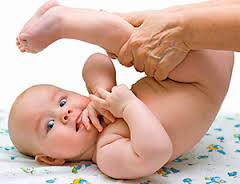

Детский массаж
Детский массаж - это очень полезно для ребенка, особенно в возрасте до одного года, когда поверхность тела малыша больше по отношению к его массе - в это время массаж имеет особенно сильное воздействие на организм. Зачастую массаж помогает скорректировать многие отклонения без хирургического и медикаментозного вмешательств. Но стоит подходить к этому с повышенной внимательностью и осторожностью.
Детский массаж способствует развитию моторики ребенка, учит малыша пользоваться собственным телом, повышает мышечный тонус. В раннем возрасте малыш не может высвободить всю свою энергию - массаж отлично помогает ему в этом. Иногда после курса массажа родители замечают, что ребенок пополз, сел или даже пошел.
Чтобы правильно и безболезненно сделать массаж ребенку до одного года нужно в совершенстве владеть техникой и безопасными приемами проведения детского массажа, а в некоторых случаях детский массаж может быть вообще нежелателен. Для того, чтобы не нанести вред Вашему ребенку - обязательно получите консультацию специалиста в данном вопросе. Консультацию о детском массаже в Запорожье Вы сможете получить позвонив нам по указанному телефону.
Особенно важен детский массаж для детей со следующими заболеваниями: рахит, плоскостопие, сколиоз, дисплазия, плоскостопие, бронхит, пневмония новорожденных, пупочная или паховая грыжа, плеврит, бронхиальная астма, ДЦП, дисфункция ЖКТ, гипотрофия, болезни щитовидной железы, гипо или гипертонус, кривошея, анемия. В таких случаях нужно найти хорошего специалиста по детскому массажу, с чем мы Вам с радостью поможем.
Для того чтобы вызвать массажиста на дом и провести курс детского массажа в Запорожье Вам достаточно позвонить по телефону или отправить письмо с Вашими координатами по электронной почте.
Здоровья и успехов Вам и Вашим деткам.
Реабилитационный массаж – это массаж, который делается людям после перенесенного инсульта, травматических поражений конечностей, позвоночника.
процедуры
Физиотерапия будит внутренние резервы организма, укрепляет иммунитет и тем самым сокращает сроки лечения, активизирует важнейшие биохимические процессы в организме.
массажа
Курсы массажа это отличная возможность сэкономить семейный бюджет, личное время и самим с радостью позаботиться о своем любимом малыше или о своих родных.